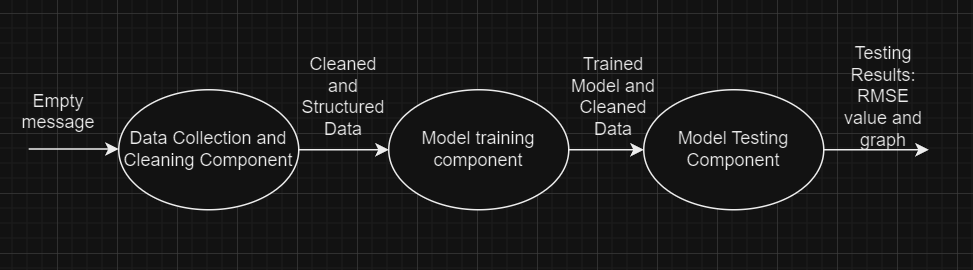

First Steps in Creating a Machine Learning Pipeline#
The initial phase in creating a Machine Learning (ML) pipeline involves defining the problem, establishing the objectives, and identifying the deliverable items. This chapter will guide you through these foundational steps, using a practical example to illustrate the process.
Problem Definition and Objectives#
The primary objective of the ML pipeline we aim to build is to provide a clear, straightforward example of how to construct an ML pipeline. To achieve this, we will focus on creating a simple, static pipeline without incorporating advanced features such as feedback loops or model retraining. The pipeline will be designed to perform the following tasks: ingest data, clean the data, train a simple linear regression model, evaluate the model, and present the results.
For this example, we have chosen to develop a stock price prediction model, as financial data is both accessible and commonly used for training and testing models. To maintain simplicity and ease of understanding, a Linear Regression model has been selected.
Preliminary Script Development#
Before delving into the pipeline construction, it is advisable to first develop a script that performs the required steps and successfully creates the model. This preliminary script serves multiple purposes:
Validation of Code Segments: By developing the script first, you ensure that the necessary code segments are functional. This allows you to concentrate on the inter-component communication during the pipeline construction phase.
Component Definition: Understanding the full script beforehand aids in defining the distinct components of the pipeline.
Familiarization with Tools: Writing the script helps you become familiar with the packages and tools required throughout the process.
For this example, a script that trains and tests a stock price prediction model has been developed and is provided in the notebook named Stock_Price_Prediction.ipynb. It is recommended that you thoroughly review this script to gain an understanding of the steps involved.
Breakdown of the Pipeline Components#
Upon examining the script, you will notice that it performs the following sequential tasks:
Data Ingestion: Reading data from a CSV file.
Data Cleaning: Preparing the data for training.
Model Training: Training a linear regression model using the cleaned data.
Model Testing: Evaluating the trained model.
These tasks will be divided into three distinct components within the pipeline:
Data Cleaning Component: Responsible for reading the CSV file, cleaning the data, and preparing it for model training.
Model Training Component: Receives the cleaned data, trains the linear regression model, and outputs the trained model.
Model Testing Component: Evaluates the trained model, producing both visual and quantitative evaluation metrics.
Defining Component Inputs and Outputs#
The next step is to define the inputs and outputs for each of these components. Below you can see a list of the values necessary for each of the components in order ot complete their part of the process, as well as the output they produce:
Data Cleaning Component:
Input: Raw data from a CSV file.
Output: Cleaned and preprocessed data, split into features (
X) and target (Y) variables.
Model Training Component:
Input: Features (
X) and target (Y) variables from the Data Cleaning component.Output: Trained linear regression model, along with the cleaned data.
Model Testing Component:
Input: Trained model from the Model Training component, as well as the cleaned and preprocessed data.
Output: Evaluation results, including a plot of predictions versus actual values and the RMSE (Root Mean Square Error) metric.
Handling Input Requirements on the AI4EU Experiments Platform#
When deploying the pipeline on the AI4EU Experiments platform, it is crucial that the output of one component precisely matches the input expected by the next. This is essential for seamlessly connecting the components to form a cohesive and functional pipeline. As the Model Testing component requires the cleaned data produced by the Data Cleaning component, this data must be passed along through the entire pipeline. Consequently, the Model Training component must not only accept all the cleaned data as input but also return it alongside the trained model as output. The Model Testing component will then take both the trained model and the entire set of cleaned data as input.
However, there is a specific constraint on the AI4EU Experiments platform: the first component in the pipeline must take an empty input. This means that we cannot directly pass the CSV file as an input to the Data Cleaning component. To work around this, we need an alternative method to provide the data to the pipeline.
To address this challenge, we have decided to develop a web application for the Data Cleaning component. This web application will allow users to upload the CSV file they wish to use in the pipeline. Once uploaded, it will be saved to the machine running the server and app, and will therefore be accessible to the Data Cleaning server. This approach ensures compliance with the platform’s requirements while maintaining the functionality of the pipeline.
We will also create a web application for the testing component where the generated plot will be displayed. This means we cannot simply use the plt.show() function used in the script. Instead, the plot should be saved as a file after the testing is completed so that it can be accessed and displayed by the web application.
Ensuring Consistent Inputs and Outputs#
To ensure compatibility between components, the inputs and outputs have been carefully structured so that they align across the entire pipeline. Below is a summary of the inputs and outputs for each component, emphasizing the need for consistency:
Data Cleaning Component:
Input: The input will be an empty message and the required raw data will be received through the web application.
Output: Cleaned and preprocessed data, split into features (
X) and target (Y) variables.
Model Training Component:
Input: Cleaned data (features
Xand targetY) from the Data Cleaning component.Output: Trained linear regression model and the same cleaned data.
Model Testing Component:
Input: Trained model and cleaned data from the Model Training component.
Output: Evaluation results, including a plot of predictions versus actual values and the RMSE metric.
This careful alignment of inputs and outputs ensures that each component integrates smoothly with the next, facilitating a seamless deployment on the AI4EU Experiments platform, while also providing a practical solution for data input through a web application. Below you can see a basic graph explaining the inputs and outputs of the servers. The graph does however not visualize the web applications connected to the servers.

Final Thoughts#
Given the complexity of creating an ML pipeline, it is essential to have a clear understanding of the desired end product from the outset. Any changes made later in the process can require significant additional effort. Therefore, it is important to meticulously plan and define the pipeline components and their interactions before beginning the implementation. A well-defined plan will minimize the need for revisions and ensure that the pipeline meets its intended objectives.